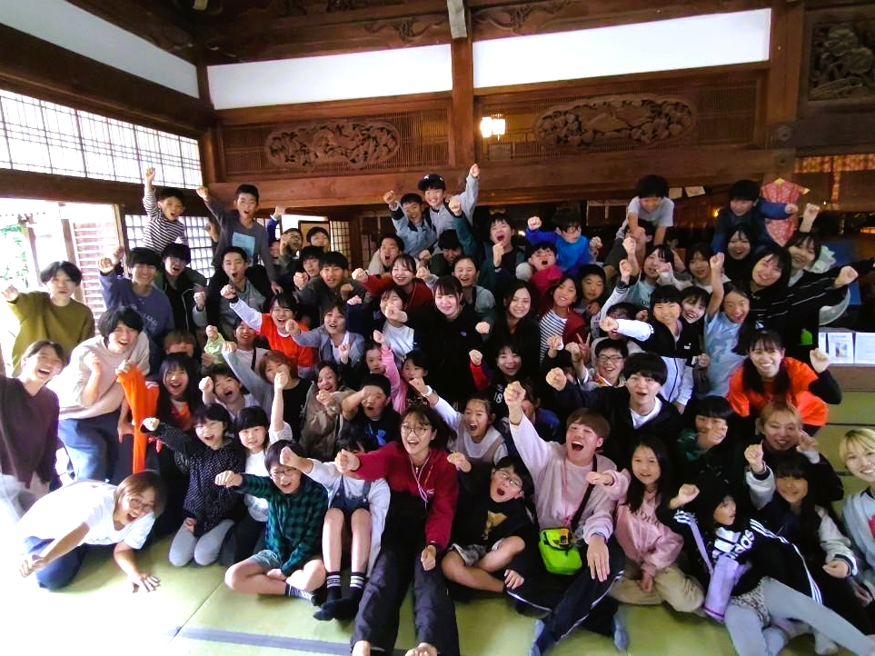
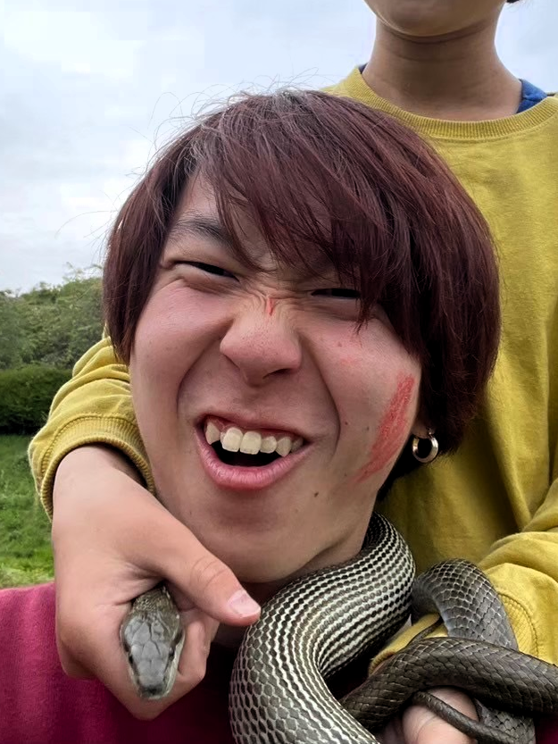
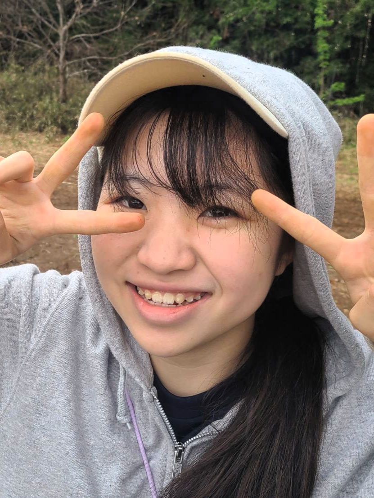
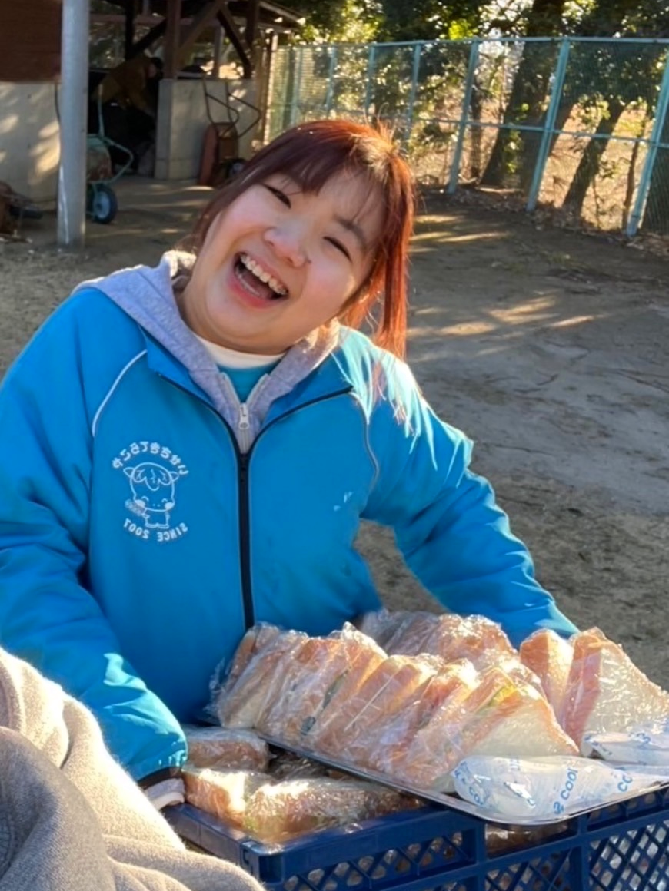
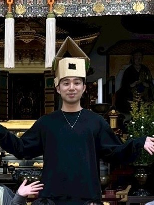

2025年10月11日(土)〜13日(月・祝)
広島県・宮島
Presented by NPO法人 全国てらこやネットワーク

大学生×小学生、全国から宮島に集まり、その地を活かした企画やお寺活動を通して作りあげる感動体験。
キャンプが終わった時には、「あの時は夢中になって頑張れた」と振り返られるような、楽しい思い出をたくさん作りたいと考えています。
そして、その経験が日常に戻った時、「あの時できたから今回も頑張ってみよう」「こんなことで挫けていられない」と、次へ進むエネルギーになることを願っています。
子どもも学生も「ひたむき」になってほしい。
そんな思いから世界遺産キャンプを企画しています。

学生1
大学名

りなし
フェリス女学院大学2年生

さやちん
高崎健康福祉大学3年生

学生4
大学名
2025年10月11日(土)〜13日(月・祝)
広島県・宮島弥山 大本山 大聖院
40名
小学3年生〜中学校3年生
A1: 参加費は申込後、指定の口座に振り込んでいただきます。
A2: 食事は全て用意いたします。アレルギー等がある場合は事前にお知らせください。
A3: キャンプ中は基本的に携帯電話の使用を控えていただきますが、緊急時には使用可能です。
NPO法人 全国てらこやネットワーク事務局
神奈川県鎌倉市大船1-25-23 千里ビル3F